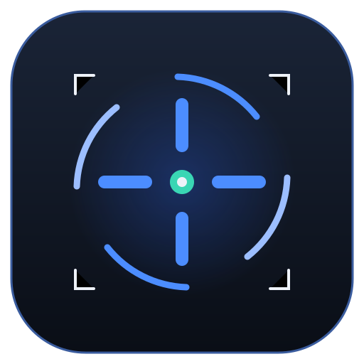
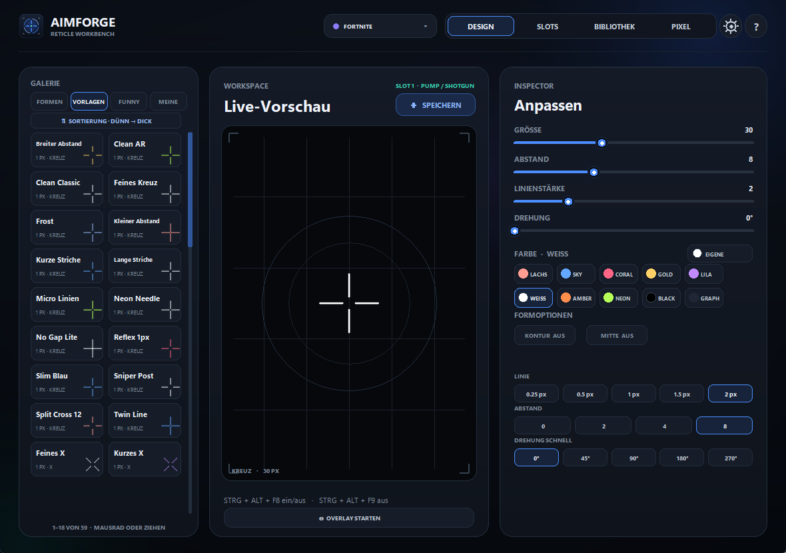
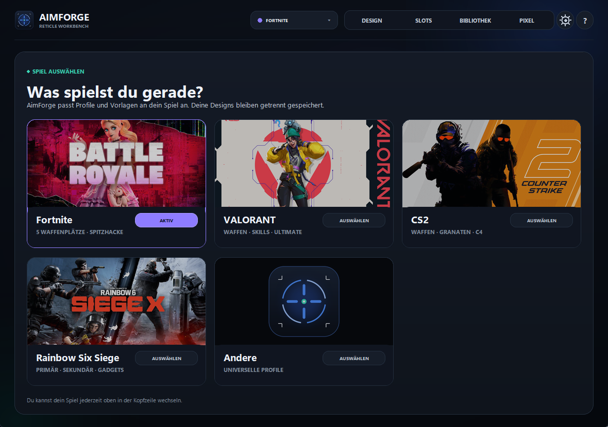
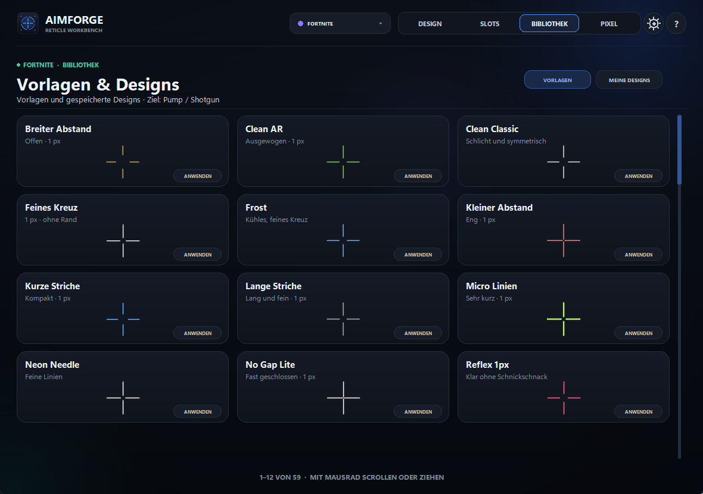

Galerie
76 Vorlagen, 20 Formen
Plus 13 Spaß-Visiere. Größe, Dicke, Farbe, Abstand und Drehung stellst du direkt daneben ein.

Fadenkreuz-Overlay · Windows
AimForge legt ein ruhiges, scharfes Fadenkreuz über dein Spiel – ein eigenes Fenster, das über dem Spiel liegt. Kein Injection, kein Auslesen, kein Auto-Aim.

Galerie
Plus 13 Spaß-Visiere. Größe, Dicke, Farbe, Abstand und Drehung stellst du direkt daneben ein.
Qualität
Das Overlay wird mit Kantenglättung gezeichnet: keine Treppchen, kein Flimmern über dem Spiel.
Steuerung
Strg + Alt + eine Taste deiner Wahl: Profil wechseln, Overlay an und aus. Bleibt gespeichert.
Sprache
Im Zahnrad umschalten. Flagge und Kürzel zeigen sofort, was gerade läuft.
AimForge.exe auf den PC speichern.
Es wird nichts installiert – das Fenster öffnet sich.
Spiel wählen, Vorlage anklicken, Overlay starten. Der Rest ist Geschmack.
Download
Eine einzelne Datei, kein Installer, keine Admin-Rechte. Deine Einstellungen liegen unter %APPDATA%\AimForge und bleiben beim nächsten Start erhalten.

